🎞🎞🎥 Galería de Fear Street
☠️🔪🩸 Parte 1: 1994
Portada
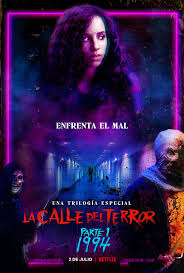Resumen de la película:
En Shadyside, tras un accidente, Sam queda maldita al entrar en contacto con los restos de la bruja Sarah Fier. Deena, su ex, junto a Josh, Kate y Simon, intentan salvarla mientras asesinos del pasado los persiguen. Intentan romper la maldición matando y reviviendo a Sam. Kate y Simon mueren, y aunque Sam revive, termina poseída. Deena jura salvarla.
Asesinos

Protagonistas
.jpg)
.jpg)
Otros personajes
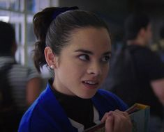 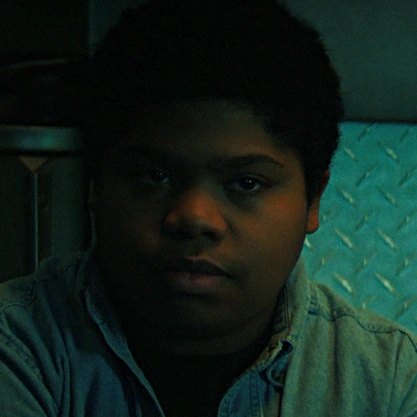 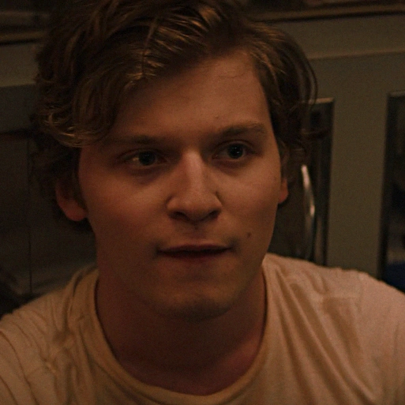Otros Asesinos
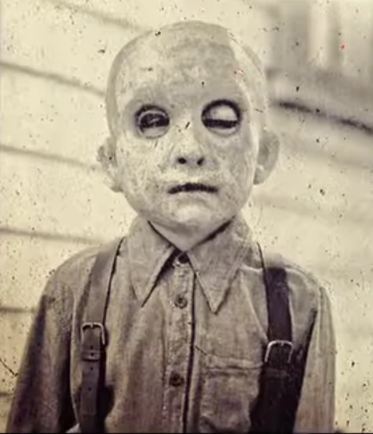 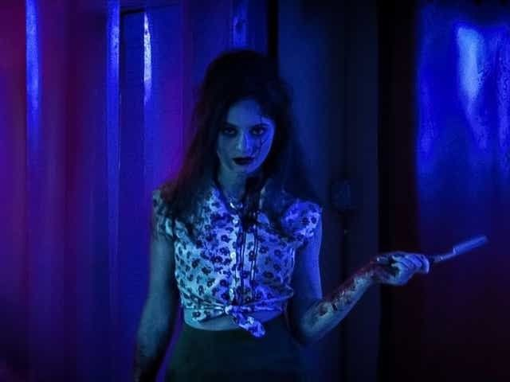 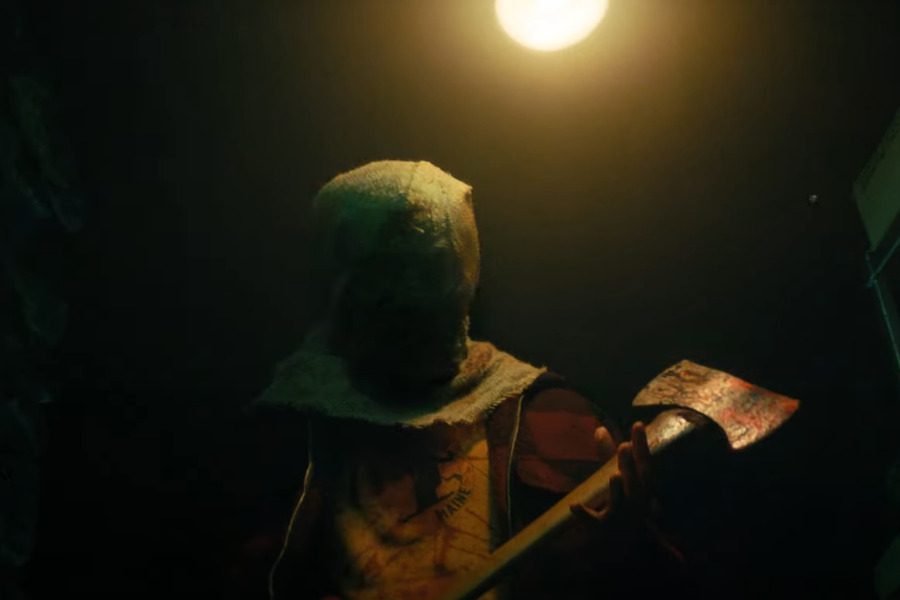.jpg)
🪓🔥🏕️ Parte 2: 1978
Portada
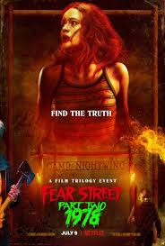Resumen de la película:
La historia de esta pelicula es un relato de una sobreviviente de la masacre del campamento Nightwings, de la ciudad maldita de Shadyside, en el verano de 1978.
Protagonistas
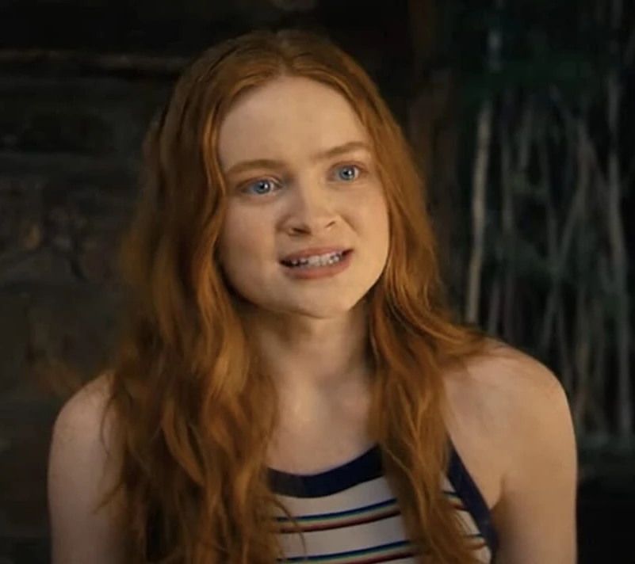.jpg)
Asesinos
Otros personajes
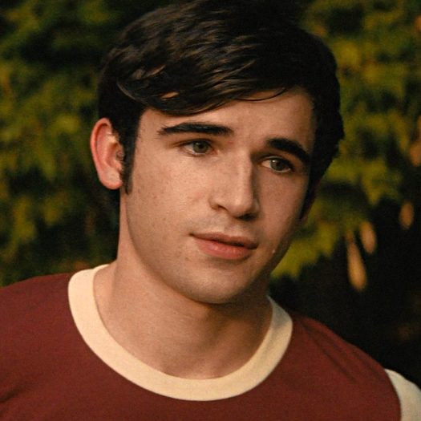 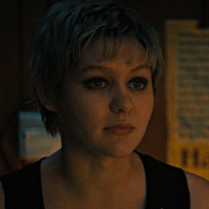 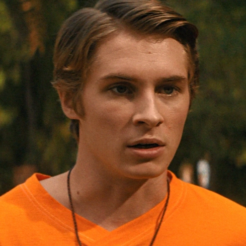 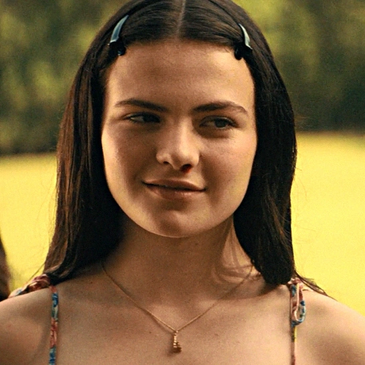
Otros Asesinos
🧙♀️🔮🩸Ψ Parte 3: 1666
Portada
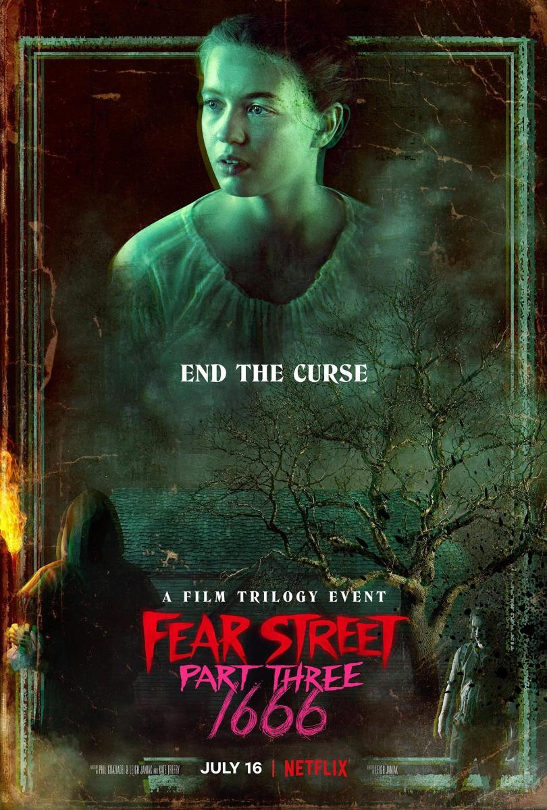Resumen de la película:
En esta pelicula transcurre tanto en el pasado y el presente de Shadyside, en una vision del pasado podemos ver la verdadera historia de Sarah Fier y su juicio por brujeria, en el presente Deena logra romper la maldicion en la que el pueblo estubo atrapado por años.
Protagonista
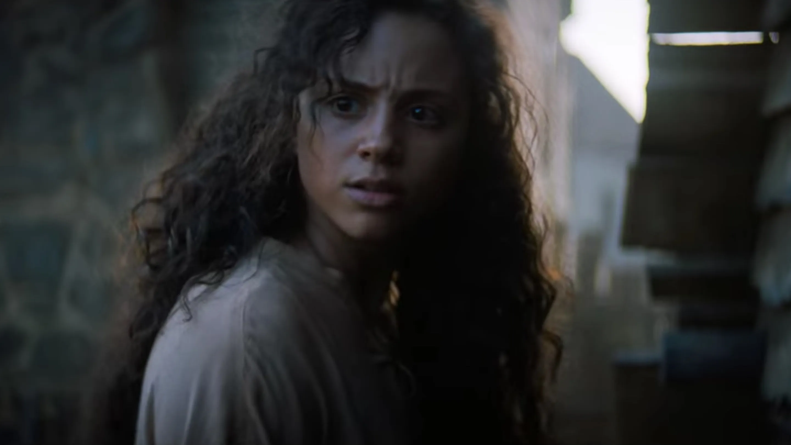 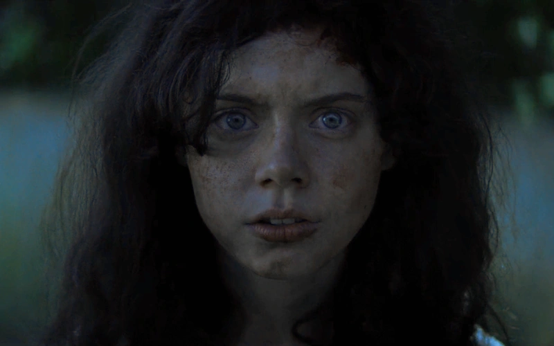Asesinos
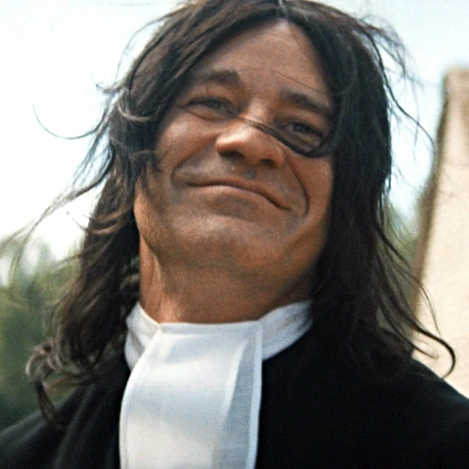 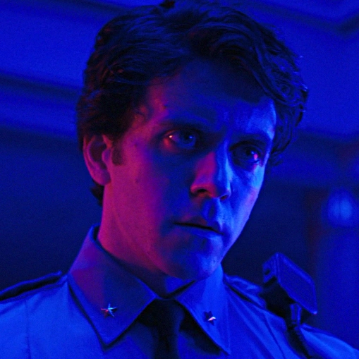 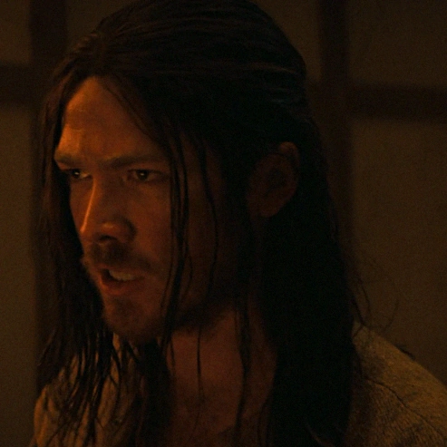Otros personajes
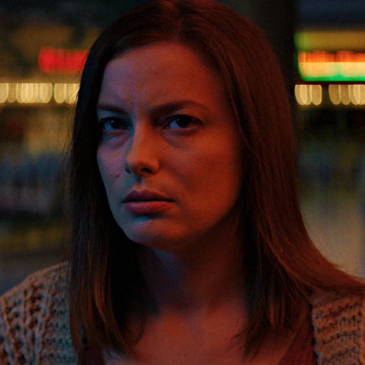 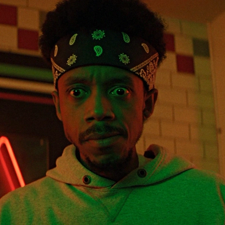
Curiosidades de la peliculas
Aqui hay algunas curiosidades de esta exitosa trilogia de nertflix: Estas peliculas son un claro homenaje de las clasicas peliculas de slasher se nota claramente ya que cada asesino mostrado en camara es una clara referencia a las peliculas mas famosas de este genero. En esta saga se mesclo los generos de terror tando de slasher y el genero de brujeria. La creadora de estas cintas "Leigh Janiak" esta casada con "Ross Duffer" uno de los creadores de la aclamada serie de netflix "Stranger Things".